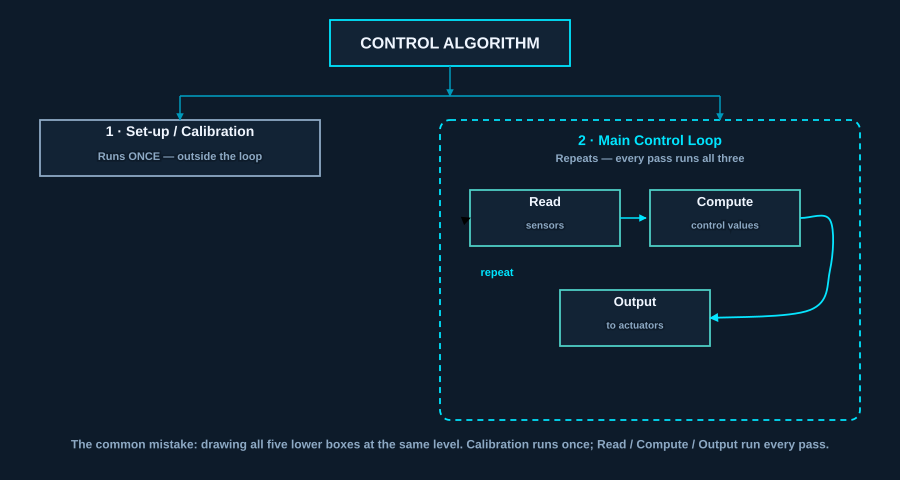
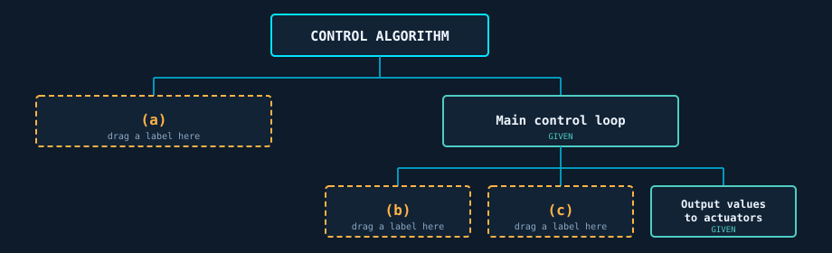

Your arm does nothing
It's wired. It's powered. It is completely still. Using what you already know from Lessons 1–8, what's missing?
Learning intentions
- Describe what a control algorithm is and what it's made of
- Identify the read → compute → output cycle in a working system
- Explain why calibration comes before the loop, not inside it
- Represent a control algorithm as a structure chart
Success criteria
- Name the three things a control loop does on every pass
- Define setpoint and give an example that isn't from this site
- Say why more sensors isn't automatically better
- Point at our own arm's future code and name each part
Eight lessons of hardware. Now the software.
Lessons 1–8
Microcontrollers, sensors, actuators, data types, PWM, power, wiring, and a built arm on your bench.Lessons 9–11
The algorithms that drive it. No hardware for three lessons — this is the thinking that makes the build work.Lessons 12–23
You implement all of it on your own arm.Your arm currently does nothing. It's wired, powered, and completely still. What's missing is a control algorithm.
What counts as a control algorithm?
Sensor
A part that measures something physical and turns it into a number the code can use — a temperature, an angle, how much light is coming back off a surface. It only ever reports; it never moves anything.Actuator
A part that does something physical — a motor, a servo, a heating element. It only ever acts; it never measures anything.Controller
The part that decides — on our arm, the Arduino running your code. It takes the sensors' numbers and works out what to tell the actuators to do.A control algorithm is code that controls the operation of a mechatronic system. It uses values from the available sensors to compute outputs that it sends to the connected actuators, to control the system's overall state.
In other words: the control algorithm is the decides part, written down. It is the code living inside the controller.
Not just "the code"
Plenty of code in a mechatronic system isn't control — start-up messages, logging, the user interface. The control algorithm is the part that decides what to do next.Sensors in, actuators out
That shape is the whole idea. Everything else in this lesson is detail about how each part behaves.Classify each of these. Is it part of the control algorithm?
In one sentence
A control algorithm is the part of the code that takes sensor readings and decides what to send to the actuators — not the start-up messages, the logging or the interface.Set up once. Then loop forever.
Click each part of the diagram to see what it does.

If that looks likesetup()andloop()in Arduino C++ — it is. The language was built around this shape because this is the shape mechatronic code has.
Quick check: which of these runs only once?
In one sentence
Every control algorithm has the same shape: calibrate once at start-up, then repeat read → compute → output forever — which is exactly what Arduino'ssetup() and loop() are for.Setpoint and error
A setpoint is the desired state of the system. The error is the gap between the setpoint and the current state.
A room
Setpoint: 21 °CCurrent: 18 °C
Cruise control
Setpoint: 100 km/hCurrent: 94 km/h uphill
Our arm's claw
Setpoint: closed enough to hold the blockCurrent: open
The gap between the setpoint and the current state is called the error. Almost every interesting control algorithm is a different answer to one question: what do I do about the error?
Every system has all three: a garden irrigation system has a moisture setpoint, a current state its sensor reads, and the error between them.
Drag each label onto the box it belongs in (or click a chip, then click a box), then check your answer.
Now pick your own example — not a room, cruise control, claw, or the irrigation system above.
Self-check before moving on:
In one sentence
The setpoint is where you want the system to be, the current state is where it actually is, and the error is the gap between them — every algorithm in this unit is a different answer to "what do I do about that gap?"One robot, two control algorithms
Watch "Control of a line following robot" — 3:15. The same robot, the same line, two different algorithms deciding how to steer.

Opens on YouTube in a new tab — 3:15.
Can't get to YouTube on the school network? Read this instead.
A small wheeled robot follows a black line painted on a light floor, using a light sensor pointed down at the surface. The same robot runs the same course twice, with different code each time.
Run 1. The robot drives straight for a short distance, decides it has drifted off the line, and snaps back hard in the other direction — then does the same thing again, and again. The path it traces is a visible zig-zag, and it is slow, because every correction is a full-strength turn no matter how slightly it has drifted.
Run 2. The same robot takes a noticeably smoother path and finishes faster. When it is only slightly off the line it makes a small correction; when it is badly off it makes a large one. It never snaps.
Before either run, the operator picks the robot up and drags it sideways across the line by hand, back and forth. That is the calibration step this section is about: the sensor takes a reading over the black line and a reading over the light background, so the code knows what "on the line" looks like in this room's lighting.
The hardware is identical in both runs. Everything that differs — the zig-zag versus the smooth path, the slow lap versus the fast one — comes from the algorithm.
a) The hardware was identical in both runs. What does that tell you about where the difference came from?
Calibration happens before the loop
The robot was calibrating: reading how much light comes back from the black line and from the white background at this venue, in this lighting, so the algorithm can tell them apart.
Look back at the start of the video: the operator drags the robot sideways across the line by hand, back and forth, before ever letting it drive itself. That's not fiddling — it's the robot's sensor taking one reading directly over the black line and one over the white background, so it has both numbers to compare against once the run starts.
Why it can't be hard-coded
"Black is below 400" is true in one room and wrong in the next. Sunlight through a window changes it.Why it's outside the loop
It runs once, at start-up. Re-measuring the baseline on every pass would be slow — and would drift as conditions change mid-run.You'll do this twice
Lesson 12: calibrate each servo's safe range. Lesson 17: calibrate the LDR's covered vs uncovered readings at your bench.Quick check: why does the operator move the robot around by hand at the start of the video?
In one sentence
Calibration measures what the sensor readings actually mean here and now, which is why it cannot be hard-coded and why it runs once at start-up rather than on every pass of the loop.Build the structure chart
A structure chart shows the modules a program breaks down into — a module being one named job the program does, like "read sensors". The top box is the whole task, and each level below breaks it into smaller jobs. It does not show order or conditions — that's a flowchart's job.
Drag each chip into the box it belongs in (or click a chip, then click a box — same result). Two boxes are already given. Place all three, then check your answer.
Remember: a structure chart doesn't show order — so it genuinely doesn't matter which of the two loop boxes gets "Read sensors" and which gets "Compute control values." Set-up / Calibration only has one correct box, though — it's the one outside the loop.

Rebuilding this chart in draw.io for your folio is on the extended worksheet, not here.
In one sentence
A structure chart breaks a program into the jobs it is made of, level by level — it says what the parts are, not what order they run in.Read: more sensors is not free
Read values from the sensors to find the current state of the system. More sensors, and more accurate readings, give a better picture of what's actually happening.
What you gain
A more accurate picture of the system's state, and therefore better decisions.What it costs
Money. Physical space on the device. And time — every sensor read happens inside the loop, so more sensors means a slower loop.A slower loop means the system reacts later. There is a real point at which adding a sensor makes the system worse, and engineering judgement is knowing where it is.
Match it: drag each cost chip onto "Read" (or click a chip, then click "Read" — same result).
One of those three costs affects how the algorithm runs, not just what it costs to build. Which one?
Compute: how far off are we, and what about it?
The input
The sensor readings you just took, and the setpoint you're aiming for.The output
Control values for the actuators — an angle, a speed, a pulse width.The constraint
This happens on a microcontroller, not a laptop. If the calculation is complex, processor speed starts to matter — the maths has to finish before the next loop pass is due.This is the same trade-off as Lesson 1's microcontroller-versus-CPU comparison, arriving from the other direction. A 16 MHz Arduino Uno is plenty for our arm. It would not be plenty for a self-driving car.
Output: the physical world does not obey instantly
You send a value to an actuator. The physical system then takes time to respond — and it generally doesn't behave exactly the way you modelled it.

Optional — how a servo's motor, gears and feedback potentiometer actually fit together. Opens on YouTube in a new tab — 6:44.
Can't watch the video? Here is what it shows.
The animation cuts a servo open. Inside are a small DC motor spinning fast but weakly, a gearbox trading that speed for turning force, and the output shaft your arm's plywood link bolts onto. Geared to that shaft is a potentiometer — a component whose electrical resistance changes as the shaft turns, so a small circuit beside it always has a live reading of the shaft's real angle. That circuit compares the real angle against the angle your code asked for and runs the motor until they match.
Two things in it matter for this section. The gear teeth have a small amount of play between them, so when the motor reverses the teeth must re-mesh before the shaft moves at all — that is the backlash described below. And the whole sequence takes time: the shaft is still travelling after your code has moved on.
Gear backlash
When a servo reverses direction, the gears have to re-mesh before anything moves. That gap is real, and it's why a reversal is not the mirror image of the original move.Compliance
Soft rubber tyres deform before the wheel actually turns. Our arm's plywood links flex slightly under the weight of a held object.So the state you read at the top of the loop is always slightly out of date. Good control algorithms are written by people who know that.
In one sentence
Each step of the loop costs something real — sensors cost time, complex maths costs processor speed, and actuators cost delay — so the state your algorithm reads is always slightly out of date.Trace it, then modify it
Here is a simple line-following control algorithm in pseudocode — the algorithm written in plain structured English rather than in a real programming language, so it can be read without worrying about syntax. Its three calibration lines run once, before the main control loop starts.
<- means "store into"
threshold <- 500 reads as "put 500 into threshold". The arrow points at the box the value goes in.threshold
A fixed value a reading gets compared against, to decide what to do. Here it is the halfway point between the black-line reading and the background reading — below it means "over the line".REPEAT … UNTIL
Everything between them runs over and over until the condition is met. This is the main control loop.Click every line that is calibration, then click every line that is the main control loop.
BEGIN darkValue <- read sensor over the black line lightValue <- read sensor over the background threshold <- (darkValue + lightValue) / 2 REPEAT reading <- read light sensor IF reading < threshold THEN steer hard LEFT ELSE steer hard RIGHT END IF UNTIL stopped END
In one sentence
This algorithm only ever asks "which side of the threshold am I on?", so it only ever has two responses — which is exactly what produces the zig-zag, and exactly what Lesson 11 improves on.Apply it to our arm — then diagnose a fault
void setup() {
}
void loop() {
}
In Lessons 13–15 your loop() will command joint angles directly, with no sensor readings at all. Which of the three loop steps is your code actually doing?
Choose one — the explanation only appears after you commit.
In Lessons 17–18 an LDR is added under a pickup pad, and the pick-and-place routine has all three loop steps.
Complete the table for the finished routine.
Diagnose: a pair writes a light-triggered routine for their arm. It works perfectly in period 3. In period 5, at the same bench, it triggers constantly with nothing on the pad. What is most likely missing?
In one sentence
Our own arm's code is the same shape:setup() attaches the servos and moves them somewhere safe, and loop() reads, decides and outputs — and a routine that works in period 3 but not period 5 is almost always a missing calibration step.Loop timing budget
Every pass of the main control loop takes time. Suppose a system is designed to update its actuators 50 times per second.
Today's key ideas
1 · One shape
Calibrate once, then loop: read → compute → output. Every control algorithm you meet is a variation on it.2 · The error is the point
Setpoint minus current state. What an algorithm does about the error is what makes it different from another algorithm.3 · Every part has a cost
More sensors cost time. Complex maths costs processor speed. Physical actuators cost delay.Vocabulary check
If any of these is still fuzzy, the section named beside it is where it is explained.
| Sensor | A part that measures something physical and turns it into a number. §2 |
| Actuator | A part that does something physical — a motor, a servo, a heating element. §2 |
| Controller | The part that decides — on our arm, the Arduino running your code. §2 |
| Control algorithm | The code that takes sensor values and computes what to send to the actuators. §2 |
| Set-up / calibration | The step that runs once at start-up, establishing what the sensor readings mean here. §3, §5 |
| Loop pass | One complete trip around read → compute → output. §3 |
| Setpoint | The desired state of the system — the value it is trying to reach or hold. §4 |
| Current state | What the sensors say the system is actually doing right now. §4 |
| Error | The gap between the setpoint and the current state. §4 |
| Structure chart | A diagram breaking a program into its modules, level by level. It shows what the parts are, not their order. §6 |
| Module | One named job a program does, such as "read sensors". §6 |
| Backlash | The play between gear teeth — on a reversal they must re-mesh before anything moves. §7 |
| Compliance | Flex or give in a physical part, so it deforms before it moves. §7 |
| Pseudocode | An algorithm written in structured English rather than a real language. §8 |
| Threshold | A fixed value a reading is compared against, to decide what to do. §8 |
| Dead band | A zone either side of the threshold where the system deliberately does nothing. You build one in §8 — and Lesson 11 gives it its real name. §8 |
Download a summary of your answers
This page saves your progress in this browser only — nothing is sent anywhere automatically. Add your name below to download or print your notes and answers, for revision or to hand in.
Enter your name to enable the download.